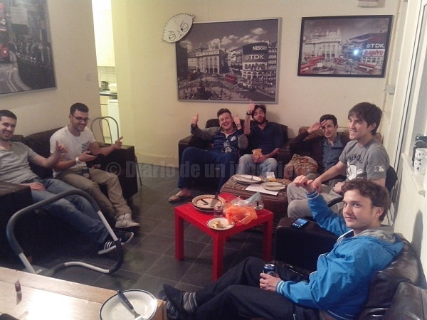
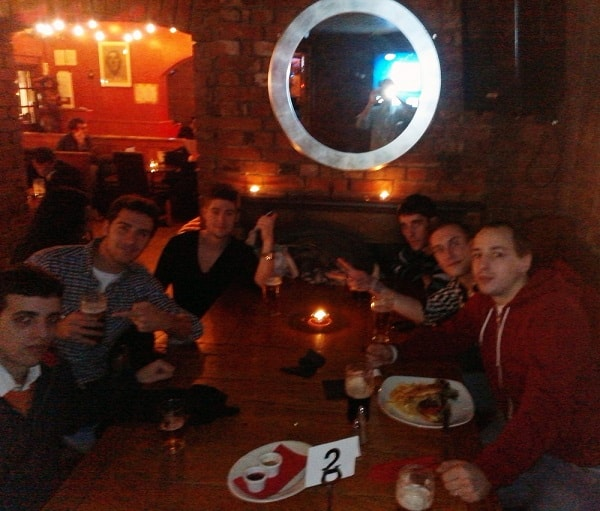
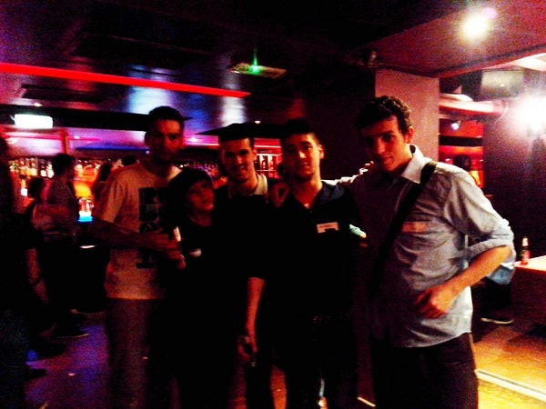

One 19th February of 2101, I landed London, one town biggest I have been use to see.
I have been studied all about the town and where it was interesting to settle in my personal situation.
I had as point of start a english course in a center guaranteed by the government.
I chose the northwest London area, in a hostel of area A, near EadwageRoad.
One 19th February of 2101, I landed London, one town biggest I have been use to see.
I have been studied all about the town and where it was interesting to settle in my personal situation.
I had as point of start a english course in a center guaranteed by the government.
I chose the northwest London area, in a hostel of area A, near EadwageRoad.
First thing I notice is the bad english I spoke when i asked about the platform bus I need to take the bus to arrive to London since the airport.
I was not able to understand and I missed my bus. Fortunately, the person in charge let me go in the next bus.

The neighbourhood around my hostel it was plenty of markets and bazaars, seeming more any other town of the world than a europe town.
I was a hundred of meters of the main streets in London and meters of the more famous road of London, Abey Road, the Beatles Road.
It was crowded of people of all social class and it seem more like a crappy town of Morocco than London. Lot of establishments of fast food had very competitive prices, even cheaper than the own Mac Donalds, and present more kind of menus, some of them decent even.
I was looking for a place to live from this hostel and after three days of looking the real situation in agencies and by different websites.
Finally I make an agreement with a spanish person who returned to spain and need an urgent replacement without changes in the contract.
It was a solution fast and truly. I was around some spanish people so it was easy to discuss any problem like with other people.
I live with spanish but it was other nationalities in the house, mostly italians and french.
In that time it was the boom of the emigration in Spain after the 2009 crisis when there were not jobs in all sectors, and people have decided to move outside Spain, one of the best countries to live in the world, but like others if you don´t have money you cannot live.
I had been previously in other foreign country and I had learn a lot of social skills to have success. More important things always is effort, hope and never surrender.
Make things able to happen. Luck can influence in life but the luck waiting in your sofa don´t arrive, you need to go looking it.
My house was in Willesden Green, a quiet neighbourhood if it was not for the parties we used to do in the house, :).
The price of bedroom was not very expensive for been around area 2, it is market economy basically, more demand, highest prices.
London is the town of the world where this situation is more radical, arriving until the extreme that lot of people born in London decided to rent or sell his properties to buy houses better, and biggest in other places far of London.
These people sometimes they don't need to work anymore because they have so much money to enjoy.
Basically there are not british in london, the estimation round the 30% of British of the 12 million of people living there.
 One time land of my neighbourhood first thing I did was focus on my english courses and make my bank account.
One time land of my neighbourhood first thing I did was focus on my english courses and make my bank account.
Firstly on the day I went to the library next to my house to learn english about 2 hours all the days, from 10.30 to 12.30.
There I know people in my same situation, learning english to have one job there. I have grammar and conversation class for free. After that I use to buy food to make my lunch at home.
I used to use my skills to trade with sellers and I don't use to go to the normal groceries such as Sainsbury and others.
I went to halal groceries and market streets for buy vegetables and fruit arriving to save like a 50%. I use to cook for me or others having a control of my nutrition.
Just finish my lunch i watch some tv series and i went to Killburn to learn english in Oxfield, a Callan Method center.
I did an intensive course for 4 hours and with my negotiation with the boss of the center I agree in pay 150 pounds for 4 daily hours of english, instead the 200 pounds.
When i arrive to my house i use to go to the park, GladStone park to do some sport, with a polish girl called Kasia, very friendly.
I exchange my spanish for her english but most of the time we spoke in english. I run 10 km three times per week.
At night I use to go to sleep around 11 pm. However in my house always it was people living, and speaking. Some people work morning, some at night.
So if you would like to speak with someone always there was someone available. It was more a hostel than a house but with the price of a expensive spanish hotel.
Saturdays I did my free course of 6 hours in the official place i talked before. Near the Jubile line, and even being 5km of my house I didn´t spend more than 15 minutes to arrive.
It is crazy to think how good works the tube in London, all synchronised and lots of cab trains to choose, easy and fast.
However prices for public transport are really expensive, being in some cases 15% of the price people earn monthly. If you add the 30% in food and 50% in rent you have around a 5% to live.
Minimum salary is around 1.100 pounds monthly, about 1.300 euros in these time.
 Even in these case there are always people available to work in these ratios, and this is one of the reasons London works.
I know very well what it was good for me in that moment, so I was trying to make the maximum effort to learn the language and other things, and work later outside London in something relating to engineering, where I could save more than 50% of my expenses.
People of the house was very nice and I meet very special people there than I always remembered with a open mind like me and most of the people leave Spain to have a better future.
Even in these case there are always people available to work in these ratios, and this is one of the reasons London works.
I know very well what it was good for me in that moment, so I was trying to make the maximum effort to learn the language and other things, and work later outside London in something relating to engineering, where I could save more than 50% of my expenses.
People of the house was very nice and I meet very special people there than I always remembered with a open mind like me and most of the people leave Spain to have a better future.
 London is the place of England where you can find a place open to enjoy at any time of the day and any day of the week. Nevertheless at difference of Spain most of the places are closed after 3 am and even before.
London is the place of England where you can find a place open to enjoy at any time of the day and any day of the week. Nevertheless at difference of Spain most of the places are closed after 3 am and even before.
I use to go to the center area to some bars for foreign people like the famous Zoo Bar or the Zebrano Bar where they propose all wednesday exchange language meetings.
There were the most cosmopolitan British and open mind than honestly I did not find when I leave London to go to other places of the country.
I can know new people every week coming for all the parts of the world. That was amazing the fact of realising that.
Saturday nights we went to the center or to some neighbourhood of the area to take some beers and after that come back to home to enjoy our own party.
We have made our disco in the living room with good speakers, and even light effects material. We use to have some problems with people of the area who call the police arriving to some days the police enjoy our party or the owner of the house.
The owner always was complain about the parties we created, but he use to avoid speak about because it was a lot of money he was earning there, around 30k pounds per week in total having account of his 6 houses in the area.
We suspect also that this money it was not declared but the authorities because the weakness of the contract we agree with him. London it is a little anarchic city, there are a lot of corruption there and the rules always left some holes to pass the law.


He had not a lot to loose until a penalty that could suppose 2.5k pounds and he could deny to pay if it arrive the case.
British landlords use to be recognise for his greedy and silly character. He had a army of people who use to report any kind of incident.
Cleaners of the house used to pass one time per week but not only for cleaning, it was more about the control of the house. It was a good experience where I can learn a lot.
Furthermore, most of the districts in London use to be some pub where you can drink a beer or anything else.
Beer si the favourite drink of the british and also the cheapest because for not more than 2 or 3 pounds you can drink more than half liter in a pub, and for 1 pound in some general store.
There are a lot of things illegal in all bazaars of the areas even tobacco of eastern Europe where you can buy for not more than 4 pounds.
There are more extended cans of 50cl than 33 cl like Spain. Half pints are barely to ask for, because it is more moneymaking this kind of format.

© 2016 - All Rights Reserved - Diseñada por Sergio López Martínez
![[Valid RSS]](https://www.feedvalidator.org/images/valid-rss-rogers.png "Validate my RSS feed")